1. Dynamic range
在 lecture 6 中，我们介绍过 dynamic range，即相机感光元件能感受到的最大光量和最小可感知光量的比例。
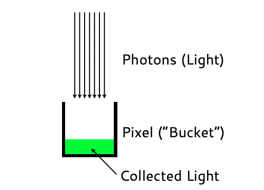
感光元件中的每个像素就像一个水桶，射进来的光就像流入水桶的水，水桶的体积与水桶体积的刻度单位之比就是 dynamic range。
在实际拍照过程中，常常会出现画面内部的 dynamic range 超出相机的能力边界，如下图所示：
从右上角的分布图中可以看出，在黑、白边界上还有许多像素分布。
2. Sensor sizes
在 lecture 1 中，我们介绍过常见的传感器大小，即画幅，这里回顾一下这张图：
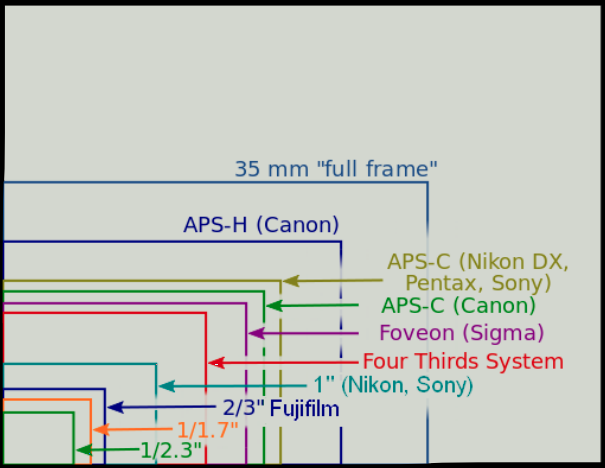
其中整个白色区域是中画幅 (medium format)，它远远大于消费级相机配备的传感器规格，实际上并不存在标准的中画幅规格；仅次于中画幅的是全画幅 (35 mm "full frame") 传感器，是中高端消费级相机设备的标准配置，适用于所有厂商，所有的消费级镜头上的参数通常也是以全画幅设备为参照；在中低端消费级相机中会存在更小的画幅，各个厂商都有自己的规格，如 Canon 的 APS-H、APS-C 等等。画幅较小的机身较便携，成本也较低，更适合中低端消费者。
接下来我们将重点讨论不同画幅的传感器给机身性能带来的影响。
2.1 Different sensor sizes, different pixel sizes
给定两个像素总量相同，尺寸不同的传感器，如下图所示：
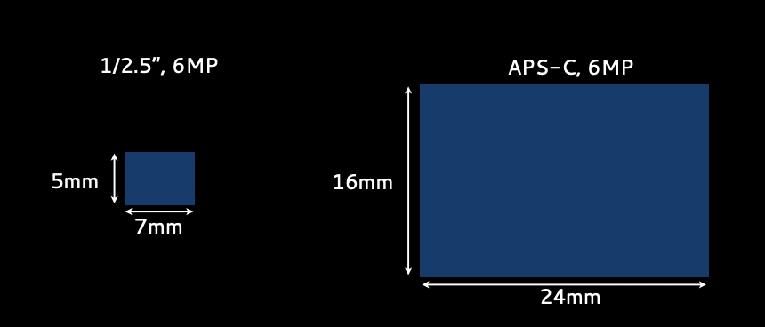
假设像素总量为 6000,000，两个传感器的对比如下：
| 传感器 | 长 | 宽 | 像素边长 |
|---|---|---|---|
| 1/2.5" | 7mm (≈2900 px) | 5mm (≈2070 px) | ≈2.4 μm |
| APS-C | 24mm (3000 px) | 16mm (2000 px) | =8 μm |
💡 让我们先记住这个结论：像素总量相同的传感器，尺寸越大，像素边长越大
如果简单地将 1/2.5" 传感器的像素边长近似为 2 μm，APS-C 的像素面积是 1/2.5" 的 16 倍，因此相同的光进入传感器后，后者的曝光量比前者多 4 stops。
2.2 Focal length and perspective
将相同的镜头安装到配备上述不同尺寸传感器的机身上，其效果相当于增加焦距。在 lecture 5 中曾经介绍过，在不同的焦距下想保持主体的大小不变，需要改变视角：
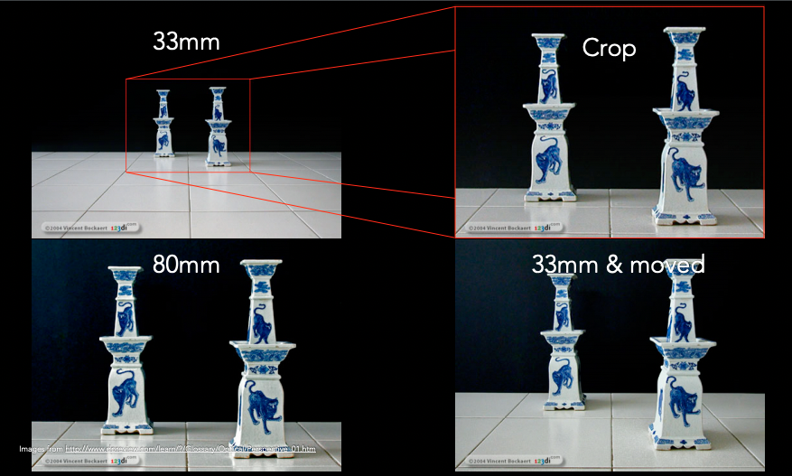
而对于同一个场景，保持拍摄角度、与主体的距离不变，增加焦距相当于在场景中裁剪出更小的一部分，但只要两个机身的像素总量相等，这种变焦不会失真：
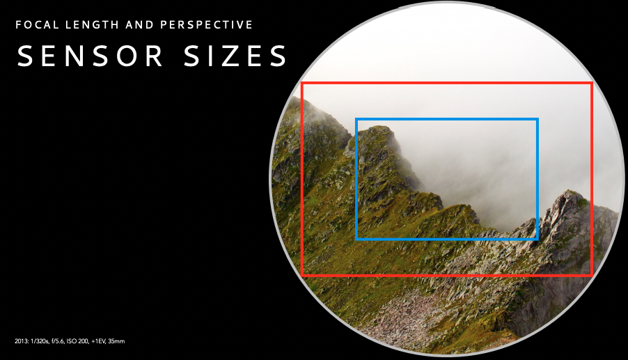
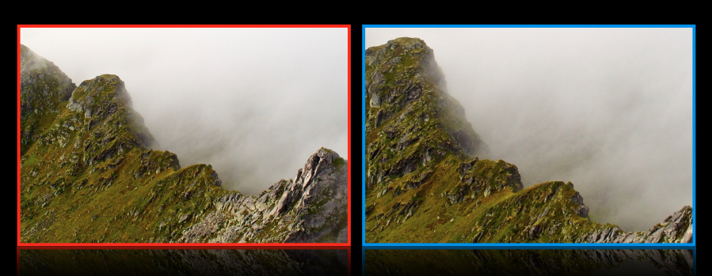
摄影爱好者会使用 crop factor 或 focal length multiplier 来快速计算等效焦距。一般镜头上描述的焦距针对的是全画幅机身，所以全画幅机身的 crop factor 为 1；而对于一个 crop factor 为 1.6 的机身，装上 50mm 的镜头的实际等效焦距为 80mm。对于长焦镜头，利用较小画幅的机身可以自动获得更长的焦距；但对于广角镜头，使用较小画幅的机身将使得广角镜头的焦距失去预期的效果。
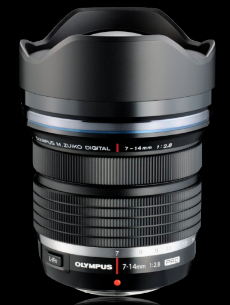
2.3 Depth of field
在 lecture 5 的 Circle of Confusion 一节中，我们介绍过景深 (DOF) 与光圈的直径大小相关，光圈的直径约大，景深越小；直径约小，景深越大。那么不同尺寸的传感器对景深会产生怎样的影响？
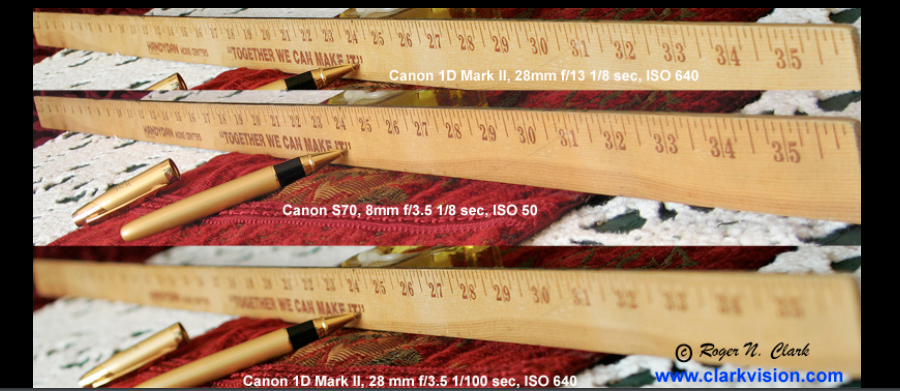
上图中共有 3 张曝光程度约等的尺子照片，从上到下我们分别称之为 a, b, c。对比图 b 和 c 可以看出：f-number 取值相等时，传感器越小，机身越小，焦距越小，光圈直径越小，因此景深越大；对比图 a 和 b 可以看出，画幅大的机身可以通过提高 f-number，主动降低光圈直径，从而获得与画幅小的机身相同的景深，即画幅大的机身在景深范围能力上是画幅小的机身的超集。
2.4 Pixel size and dynamic range
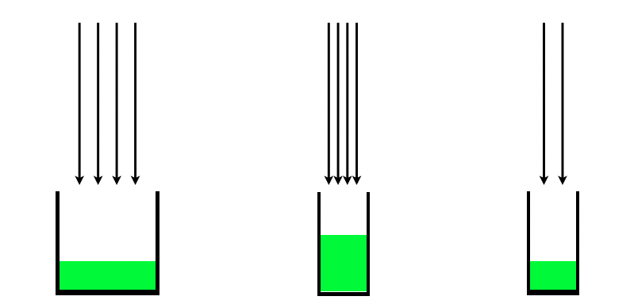
沿用前面水桶接水的比喻，像素面积越大，水桶体积越大。如果最小可感知光亮不变，画幅越大意味着相机的 dynamic range 越大。
2.5 ISO and dynamic range
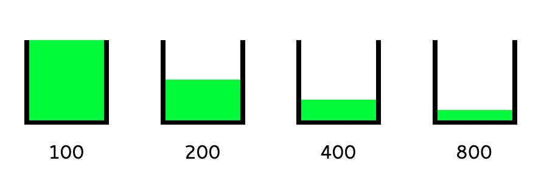
同样引用水桶接水的比喻，ISO 越高，意味着捕获的光会被放大越多倍，那么只需要越少的水就可以让水桶填满，因此，实际上 dynamic range 会随着 ISO 的增加而降低。
3. Sensor types
3.1 Active vs. Passive pixel sensors
通常感光元件有两种形式：active pixel sensors 和 passive pixel sensors。二者各有千秋，其各自的代表作是 Complementary Metal Oxide Semiconductor (CMOS) 和 Charge-coupled device (CCD)。相对来说，CMOS 造价更低，消耗更小的能量，但信噪比较高，目前更加流行。二者主要的区别在于曝光放大 (根据 ISO) 的实现地点，CMOS 会在每个像素上放大，而 CCD 使用的是全局放大。
3.2 Microlens and pixel layers
下图是 CMOS 感光元件的电路结构示意图：
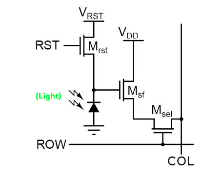
忽略各种细节，其实老师想通过这张图说明，实际上每个像素中负责接收光信号的部分面积很小，剩余部分都是一些电路元器件。如果我们什么都不做，实际上无法利用好进入到像素区域中的光。
真正让 CMOS 大放异彩的是一种叫 microlens 的装置，即在感光元件上方加一个凸透镜，将进入到像素区域的光聚焦到实际的电路感光区域，如下图所示：
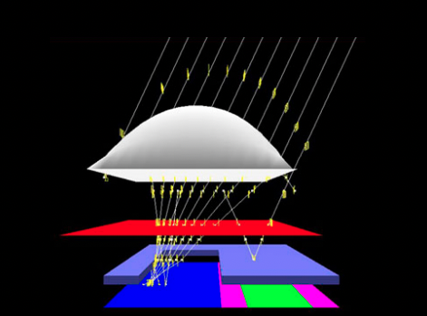
3.3 Color filter
上面提到的感光电路本身只能处理光的强度信号，无法区分其中的红绿蓝各通道的强度。一种做法是在上节提到的凸透镜下方再加一层滤光层：
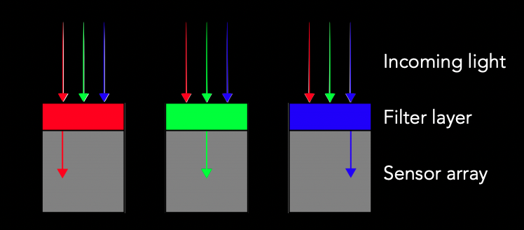
显然，我们不可能在每个像素上装上所有通道的滤光层，它们互相之间会相互遮挡，导致最终没有光线落入传感器。实践中的做法是每个像素只装有一个通道的滤光层，通过相邻像素的数据来补充所有通道的数据。
References
Wikipedia: dynamic range